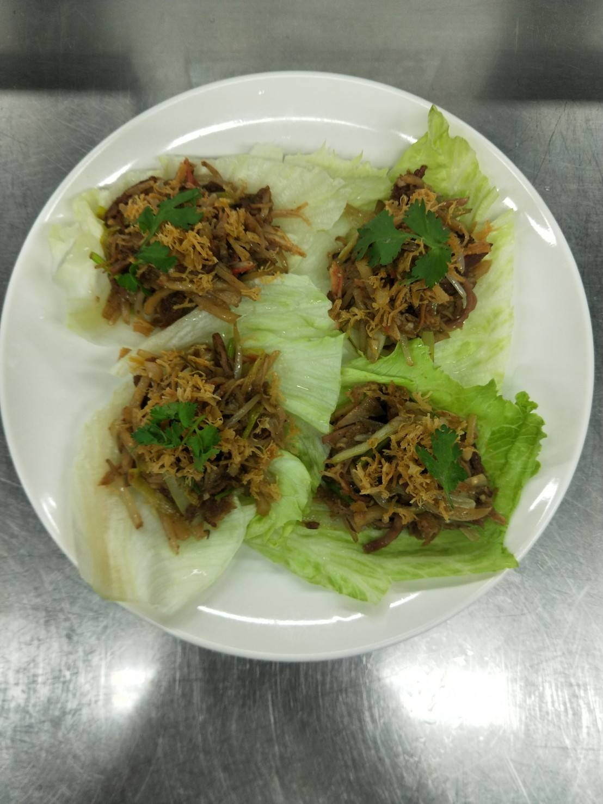

調味料：雞粉1/2，胡椒粉1/4匙，糖1匙，水50克，醬油1匙，沙茶醬1大匙，水50克，香油1/2匙
配菜：白韭黃切段（2.5公分），豆芽菜去頭去尾，洋蔥切絲，筍切粗條，火腿切絲，雞蛋打散，
蒜頭切蒜末（1/3）香菜去葉切條，叉燒肉切絲，蟹肉切絲
干貝蒸熟（水100克，外鍋300水）
生菜葉綠挑掉，取完整的葉，筍川燙，糖.鹽1/2匙
烹調：熱鍋倒油，炸干貝絲，吸油
炒叉燒肉，白韭黃，銀芽，火腿，洋蔥絲，（單炒筍絲）
熱鍋倒油，油溫夠關火炸蛋絲，再開火至金黃，剁碎
熱鍋倒油，蒜末，沙茶，米酒，醬油，水，調味料，香菜根，水滾試味，所有絲，拌炒，蛋酥（小火）
生菜鋪底，放上三絲，干貝絲，香菜葉

紅燒蝦仁羹
砂鍋明蝦粉絲堡
蔥油全雞
心得